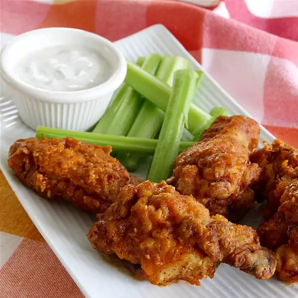

Chicken Wings

Description
Use evaporated milk to help the seasoned flour coating stick to the
chicken wings before cooking in hot oil for delicious fried chicken
wings.
ingredients
- ½ cup flour
- ½ teaspoon salt
- ½ teaspoon paprika
- ¼ teaspoon garlic powder
- ¼ teaspoon ground black pepper
- 1 (5.3 ounce) can evaporated milk
- 10 chicken wings
- ½ cup olive oil
- 1 pinch paprika, or to taste
steps
- Mix flour, salt, 1/2 teaspoon paprika, garlic powder,
and black pepper together in a resealable plastic bag.
- Pour evaporated milk into a bowl. Dip a few chicken wings into evaporated milk to coat.
Remove wings from milk and shake to remove excess.
Put wings into the resealable bag, seal the bag, and shake to coat wings in flour mixture.
Move coated wings to a plate, keeping them from touching.
Repeat process with remaining wings until all are coated in flour mixture.
- Heat olive oil in a large skillet over medium-high heat.
- Fry chicken wings in hot olive oil, turning regularly, until browned on all sides and no longer pink at the bone, about 25 minutes.
An instant-read thermometer inserted into the thickest part of the meat, near the bone should read
165 degrees F (74 degrees C). Season fried wings with additional paprika.